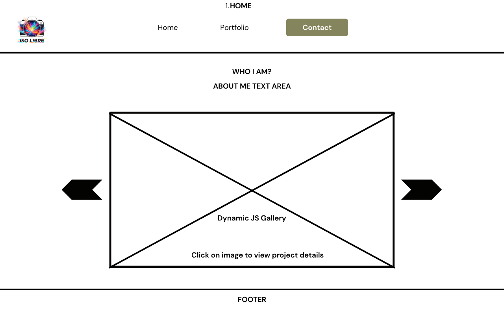
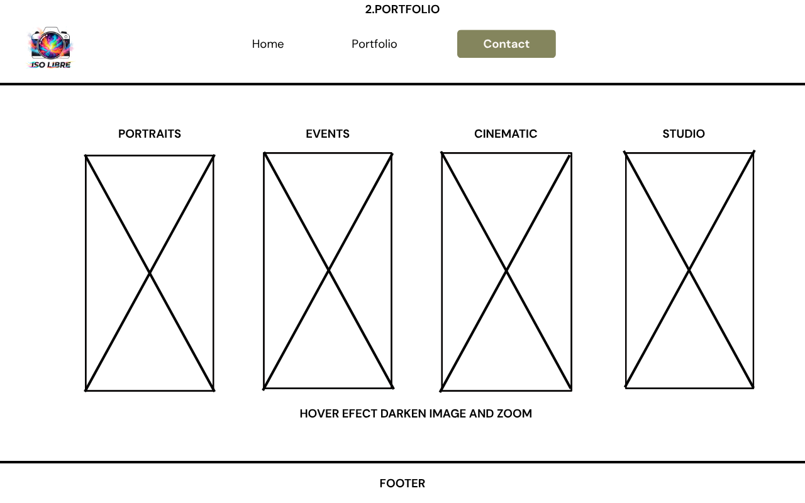
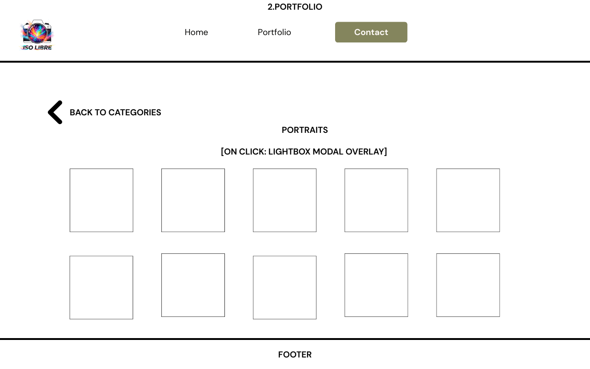
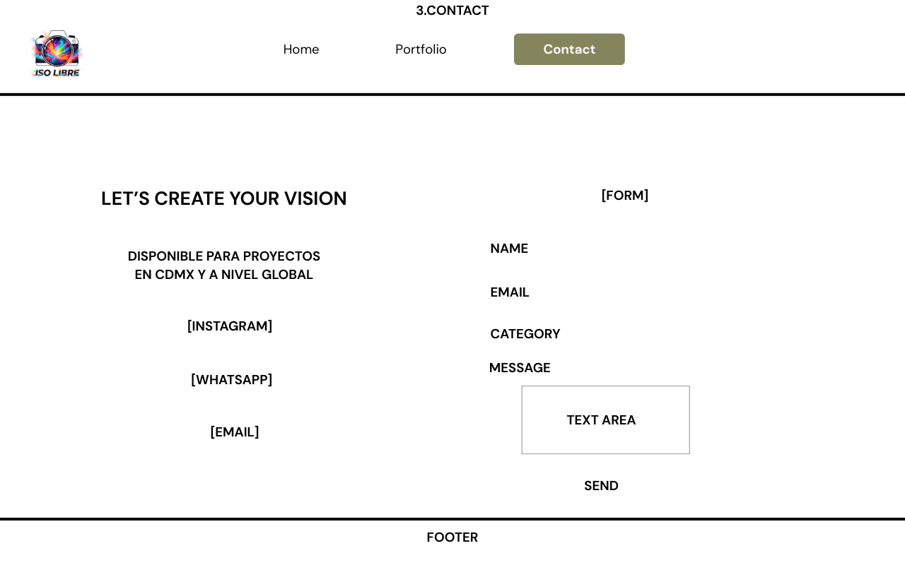
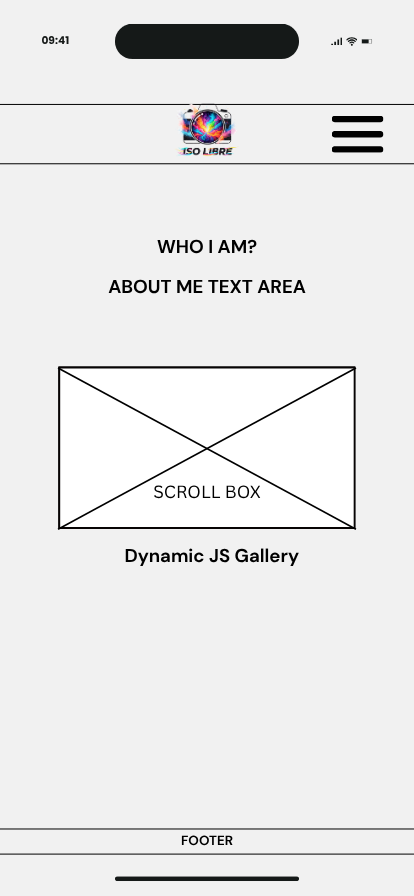
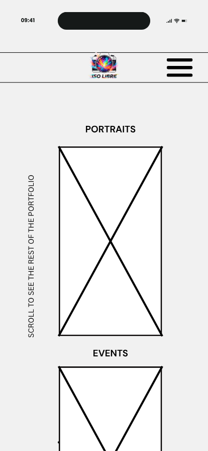
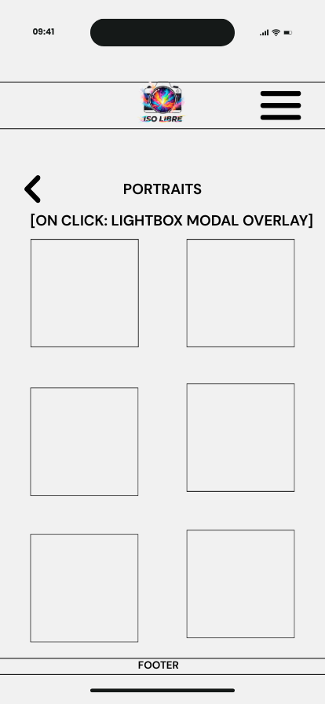
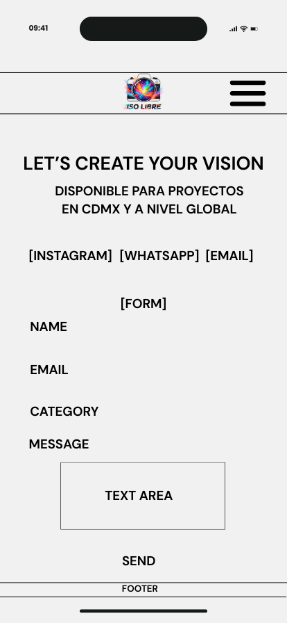

ISO Libre: The name combines "ISO," representing technical control over light and photography, with "Libre," signifying the creative freedom to produce any vision without constraints. This name aligns with my creative philosophy, reinforced by a logo featuring a multi-colored camera that symbolizes versatility and artistic expression.
The site serves as a comprehensive professional hub for ISO Libre. It functions as a client acquisition platform, a curated gallery to showcase my photography and videography work, and a functional tool for potential clients to explore my services and book sessions. Its primary goal is to provide a seamless experience where visitors can easily discover my creative output, understand my professional offerings, and initiate collaborations efficiently.
The color palette is designed to reflect both the technical precision (Navy) and the vibrant energy (Vibrant Orange) of the ISO Libre brand.
Headings: Montserrat | Body: Open Sans







